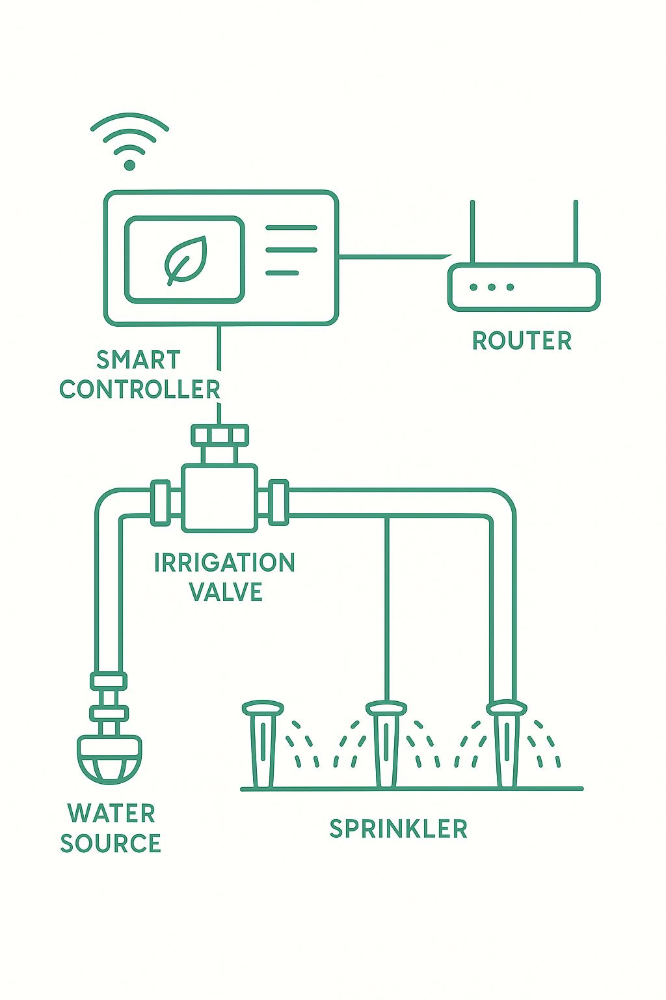

Мульти‑датчики
AI SenseКонтролируйте влажность, pH и освещенность в каждой грядке с точностью лаборатории.
- Автокалибровка каждые 24 часа.
- Сигналы в приложении и по Email.
Умный сад 2025
Garten соединяет датчики, прогнозы погоды и персональные советы, помогая растениям расти лучше без лишних усилий.
Комбинация умных датчиков, автоматизации и персональных советов берёт на себя рутину, оставляя вам удовольствие от процесса.
Контролируйте влажность, pH и освещенность в каждой грядке с точностью лаборатории.
Автоматическое управление насосами и клапанами по расписанию и состоянию растений.

Получайте рекомендации по уходу на основе сезона, погоды и истории ваших растений.
«Полейте грядку №4 — уровень влажности 28% при норме 40%.»
Сотни клубов и ботанических садов выбирают Garten, чтобы оптимизировать ресурсы и делиться опытом.
«За сезон снизили расход воды на 28%. Интерфейс понятный, а тревоги приходят до того, как растения страдают.»
«Garten стал стандартом в нашем ботаническом саду Берлина. Задачи распределяются автоматически, а отчёты готовы в один клик.»
«Настройки учат новичков садоводству: система подсказок объясняет, почему и что делать.»
Обновления в реальном времени, сценарии полива и автоматизация наглядно показывают, как Garten экономит ваши ресурсы.
Live Dashboard
*Данные примерочные. Замените на реальную вырезку из приложения.
Выбирайте пакет, который соответствует размеру вашего сада или агрокоманды.
Для домашних теплиц до 10 датчиков.
€59/мес
Оптимально для фермерских кооперативов.
€129/мес
Для ботанических садов и агрохолдингов.
По запросу
Если не нашли ответ — свяжитесь с нами, и мы поможем подобрать решение.
Нет, датчики Garten работают на солнечных панелях и общаются по защищённой сети LoRaWAN.
Да, у нас есть совместимость с популярными контроллерами Hunter, RainBird и Gardena. Доступны адаптеры.
Вы назначаете задачи участникам, отслеживаете прогресс и получаете отчёты по каждому участку сада.
Заполните форму — и мы подготовим персональную презентацию и расчёт ROI на основе ваших данных.
Garten HQ Gartenstraße 12